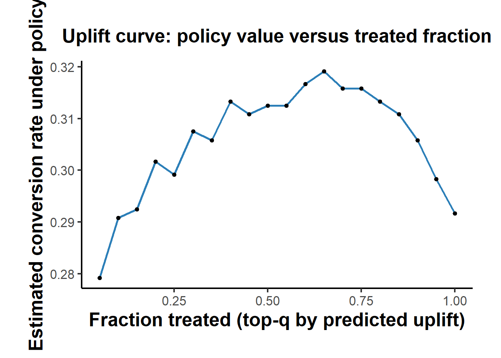

46 Uplift Modeling and Heterogeneous Treatment Effects
Chapter 45 developed the statistical machinery of machine learning for causal inference: orthogonal scores, cross-fitting, doubly robust estimation, and the forest and meta-learner estimators that recover how treatment effects vary across a population. This chapter is the applied, practitioner-facing companion to that material. Where the previous chapter emphasized estimators and their inferential guarantees, here we emphasize the decision problem that motivates heterogeneous effect estimation in the first place, namely the question of whom to treat. In marketing this question travels under the name uplift modeling, but the underlying object is the conditional average treatment effect, and the underlying goal is policy design. We will design experiments that can support heterogeneity, survey the estimators with an eye to when each is the right tool, build intuition from short simulations, work through an applied binary-outcome case study end to end, and confront the pitfalls that ruin uplift analyses in practice.
The framing throughout is deliberately operational. In a business setting we rarely ask whether a treatment works on average and stop there. We ask who should be treated, with what, and under what budget, so as to maximize profit or some other key metric. A digital coupon is the canonical example. We can predict who is likely to purchase if sent a coupon, but that is not the same as predicting the incremental purchases the coupon causes. A customer with a high baseline propensity to buy may buy anyway, yielding zero uplift. A customer with a low baseline propensity may be persuadable, yielding positive uplift. Some customers may be annoyed by the contact and churn, yielding negative uplift. Uplift is about the change induced by treatment, not the level of the outcome.
46.1 Foundations: From CATE to a Targeting Policy
46.1.1 Potential Outcomes and the Estimand
For unit \(i\), let \(W_i \in \{0,1\}\) denote treatment (\(1\) for treated, \(0\) for control), let \(X_i\) collect observed pre-treatment covariates, and let \(Y_i(1)\) and \(Y_i(0)\) denote the potential outcomes under treatment and control. The observed outcome is \[ Y_i = W_i\,Y_i(1) + (1-W_i)\,Y_i(0). \] The individual treatment effect is \(\tau_i = Y_i(1) - Y_i(0)\), the conditional average treatment effect (CATE) is \[ \tau(x) = \mathbb{E}[Y(1) - Y(0) \mid X = x], \] and the average treatment effect is \(\tau = \mathbb{E}[Y(1) - Y(0)]\). The fundamental obstacle is that for any unit we observe only one potential outcome, so \(\tau_i\) is never directly observed. Uplift is always learned indirectly from variation across units, ideally variation induced by randomization. The identifying assumptions are the familiar ones: consistency, so that the observed outcome equals the potential outcome for the treatment actually received; no interference between units, so that one unit’s outcome does not depend on another’s treatment; and no hidden versions of treatment, so that the intervention is well defined. Interference is a recurring threat in referral programs, marketplaces, and advertising auctions, and we return to it below.
Under a randomized experiment, \(W \perp (Y(0), Y(1)) \mid X\) holds by design, often even unconditionally, so the CATE is identified by a difference in conditional means, \[ \tau(x) = \mathbb{E}[Y \mid X = x, W = 1] - \mathbb{E}[Y \mid X = x, W = 0]. \] When treatment is not randomized, identification rests on strong ignorability: unconfoundedness, \((Y(0), Y(1)) \perp W \mid X\), together with overlap, \(0 < e(X) < 1\) for the propensity score \(e(X) = \mathbb{P}(W = 1 \mid X)\). The CATE remains identified, but estimation becomes fragile and demands the careful modeling and diagnostics developed in Chapter 45.
46.1.2 Uplift Is a Decision Problem
The reason uplift modeling is more than a prediction exercise is that the estimate feeds a decision. A policy is a function \(\pi(x) \in \{0, 1\}\) that assigns treatment based on covariates. The outcome realized under a policy is \(Y(\pi(X)) = \pi(X)\,Y(1) + (1 - \pi(X))\,Y(0)\), and the policy value is \[ V(\pi) = \mathbb{E}[Y(\pi(X))]. \] If the objective is to maximize the expected outcome and treatment carries no cost, the optimal policy treats wherever the effect is positive, \(\pi^*(x) = \mathbb{I}\{\tau(x) > 0\}\). Most business problems add constraints. With a per-unit treatment cost \(c(x)\) and an incremental value \(m(x)\) per unit of effect, a simple profit rule treats when the expected incremental profit \(m(x)\,\tau(x) - c(x)\) is positive. Under a budget that caps the treated fraction at \(q\), a natural policy estimates \(\hat\tau(x)\) and treats the top \(q\) fraction ranked by \(\hat\tau(x)\) or by a profit-adjusted score. This decision orientation is the reason uplift evaluation centers on ranking quality and policy value rather than on the mean squared error of \(\hat\tau(x)\) alone. A model can have mediocre pointwise accuracy yet rank customers well enough to drive a profitable policy, and a model with low average error can still target poorly.
46.2 Experimental Design for Heterogeneity
46.2.1 The Incrementality Experiment
The cleanest foundation for uplift is a randomized holdout, an A/B test in which customers are randomized to receive an offer or not and covariates \(X\) are recorded alongside the outcome. In marketing this is often called an incrementality test, since it measures the incremental effect of the offer rather than the raw outcome among the treated. Randomization secures identification of the CATE without reliance on a correctly specified confounding model, which is why uplift practitioners invest heavily in running genuine experiments rather than retrofitting observational logs.
46.2.2 Stratification and the Cost of Detecting Heterogeneity
If heterogeneity is the goal, blocking the randomization on strong predictors of the outcome improves precision. Stratifying on geography, customer tier, baseline engagement, or acquisition channel ensures balance within strata, reduces variance, and supports subgroup estimation. The deeper design lesson is that detecting variation in the CATE is far more demanding than detecting the average effect. Estimating the ATE pools every observation and so maximizes the effective sample size. Estimating the CATE splits the signal across covariate space, and each region of that space becomes its own small experiment.
Two requirements follow. First, each meaningful region of \(X\) needs enough treated and control units to estimate a local effect with acceptable variance. Estimating an effect from a handful of observations in a sparse region produces unstable, high-variance estimates, just as a mean from five observations is far noisier than a mean from five hundred. Second, each region needs overlap, meaning both treated and control units with similar covariates. Without overlap, the local effect rests on extrapolation and functional-form assumptions rather than direct comparison. This dual requirement, adequate local sample size and adequate local overlap, is why credible uplift experiments often need substantially larger samples than a simple test of whether the treatment works on average.
46.2.3 Noncompliance, Triggered Designs, and Interference
In many interventions, assignment differs from receipt. An email is assigned but may not be opened, an ad is assigned but the auction may not serve it, a discount is offered but redemption is optional. Writing \(Z \in \{0,1\}\) for the randomized assignment and \(W \in \{0,1\}\) for the endogenous receipt, the estimand may shift from the effect of receipt to the intention-to-treat effect of assignment, or to a local treatment effect recovered by instrumental variable methods under the usual assumptions. For targeting, the intention-to-treat effect is often the operationally relevant quantity, since the policy lever the firm actually controls is the send decision, not whether the customer engages.
Interference deserves particular caution. In referral programs, marketplaces, auctions, and social products, one customer’s treatment can change another customer’s outcome, so the no-interference assumption fails and naive uplift estimates can be badly biased. Design remedies include cluster randomization, saturation or partial-population designs that vary the treated fraction across clusters, and two-stage randomization. These are substantial topics in their own right; for the purposes of this chapter, interference is a red flag that calls for a design change rather than a modeling patch.
46.3 Estimators for Uplift and the CATE
We now turn from the estimand to estimation, moving from a classical parametric baseline through the modern meta-learners, forests, and semiparametric and deep-learning methods. The estimators below are surveyed with their tradeoffs; Chapter 45 provides the underlying theory for the orthogonal and doubly robust members of this family.
46.3.1 The Fully Interacted Linear Model
The foundational parametric model for the CATE is the fully interacted regression, \[ \mathbb{E}[Y \mid X = x, W = w] = \alpha + x^\top \beta + w\,\gamma + w\,x^\top \delta, \] under which the CATE is linear, \(\tau(x) = \gamma + x^\top \delta\). Here \(\gamma\) is the treatment effect when all covariates are zero and \(\delta\) captures how that effect varies with each covariate. Estimation is ordinary least squares with the interaction terms \(W \cdot X_j\), and inference follows from the usual asymptotics or from randomization-based procedures. The model’s virtues are interpretability, since each \(\delta_j\) has a clear marginal reading, and straightforward uncertainty quantification under correct specification. It often performs surprisingly well when the true effect surface is close to linear and the interactions are sparse. Its weaknesses are misspecification when nonlinearities or higher-order interactions matter, instability when the covariate count is large because every main effect is mirrored by an interaction, and the absence of automatic variable selection. Practical extensions address these by regularizing the interactions with the lasso, ridge, or elastic net (Tibshirani 1996), by replacing the linear interaction with spline or polynomial bases, or by fitting separate models within subgroups defined by important moderators.
46.3.2 Meta-Learners
Meta-learners frame CATE estimation as a sequence of prediction problems, each solvable by any supervised learner. Writing \(\mu_1(x) = \mathbb{E}[Y \mid X = x, W = 1]\) and \(\mu_0(x) = \mathbb{E}[Y \mid X = x, W = 0]\), the CATE is \(\tau(x) = \mu_1(x) - \mu_0(x)\) by definition. The members of this family differ in how they estimate these surfaces and how they combine information across treatment arms.
The S-learner pools all data and fits a single model \(\hat\mu(x, w)\) with treatment as one of the features, then predicts \(\hat\tau(x) = \hat\mu(x, 1) - \hat\mu(x, 0)\). It is the simplest approach and uses the full sample to fit one surface, which is efficient when heterogeneity is weak and the main challenge is estimating the outcome regression. Its characteristic weakness is regularization bias: when the learner penalizes coefficients or limits tree depth, the treatment indicator becomes one feature among many and the estimated effect is shrunk toward zero. We make this concrete with a simulation below.
The T-learner fits two separate models, \(\hat\mu_1\) on treated units and \(\hat\mu_0\) on control units, and takes their difference. By construction it imposes no regularization that shrinks the effect, and it allows each arm to choose its own model complexity. The cost is that each model sees only part of the data, which inflates variance when an arm is small, and the two models can extrapolate independently in regions of weak overlap.
The X-learner addresses imbalance by imputing unit-level effects and then smoothing them (Künzel et al. 2019). After fitting \(\hat\mu_1\) and \(\hat\mu_0\) as in the T-learner, it forms imputed effects for treated units, \(\tilde D_i^1 = Y_i - \hat\mu_0(X_i)\), and for control units, \(\tilde D_i^0 = \hat\mu_1(X_i) - Y_i\), fits models \(\hat\tau_1\) and \(\hat\tau_0\) to these imputed effects within each arm, and combines them with a propensity weight, \[ \hat\tau(x) = g(x)\,\hat\tau_1(x) + (1 - g(x))\,\hat\tau_0(x), \] typically with \(g(x) = \hat e(x)\). In regions dominated by controls the estimator leans on \(\hat\tau_0\), and in regions dominated by treated units it leans on \(\hat\tau_1\). This borrowing of strength makes the X-learner robust to imbalanced designs and a strong empirical performer (Künzel et al. 2019), at the cost of fitting more models and depending on a reasonable propensity estimate.
The R-learner residualizes both the outcome and the treatment before estimating the effect, inheriting the orthogonalization logic of double machine learning (Nie and Wager 2021; Chernozhukov, Chetverikov, et al. 2018). Estimate the conditional outcome mean \(\hat m(x) = \mathbb{E}[Y \mid X = x]\) and the propensity \(\hat e(x)\), form residuals \(\tilde Y_i = Y_i - \hat m(X_i)\) and \(\tilde W_i = W_i - \hat e(X_i)\), and solve the weighted least squares problem \[ \hat\tau = \arg\min_{\tau(\cdot)} \sum_{i=1}^n \bigl[\tilde Y_i - \tilde W_i\,\tau(X_i)\bigr]^2. \] The residualization makes the estimator insensitive to first-order errors in either nuisance, and under regularity conditions it attains the semiparametric efficiency bound (Nie and Wager 2021). Cross-fitting the nuisances is essential, and overlap matters because near-deterministic propensities drive \(\tilde W_i\) toward zero and destabilize the effect estimate.
The DR-learner regresses a doubly robust pseudo-outcome on the covariates (Kennedy 2023). The pseudo-outcome is \[ \phi_i = \hat\mu_1(X_i) - \hat\mu_0(X_i) + \frac{W_i\,(Y_i - \hat\mu_1(X_i))}{\hat e(X_i)} - \frac{(1 - W_i)(Y_i - \hat\mu_0(X_i))}{1 - \hat e(X_i)}, \] and it satisfies \(\mathbb{E}[\phi_i \mid X_i = x] = \tau(x)\) whenever either the propensity or the outcome models are correct, hence the double robustness. One estimates the nuisances by cross-fitting, computes \(\phi_i\) for each unit, and regresses \(\phi_i\) on \(X_i\) with any supervised learner. The construction protects against misspecification in either component and achieves efficiency when both are correct, but the inverse-propensity terms inflate variance when fitted propensities approach zero or one, so trimming or weight stabilization is usually needed in practice.
46.3.3 Causal Forests and Generalized Random Forests
Causal forests extend random forests to target effect heterogeneity directly by changing the splitting criterion and the aggregation (Wager and Athey 2018; Athey et al. 2019). Rather than splitting to reduce outcome variance, causal trees split to maximize the heterogeneity of treatment effects across leaves, an idea that goes back to recursive partitioning for causal effects (Athey and Imbens 2016). Each leaf estimates a local effect as the treated-minus-control mean within the leaf, and the forest averages these over an ensemble of trees. The key device is honest estimation: within each tree, one subsample decides where to split and a disjoint subsample computes the leaf estimates, which prevents the same data from both selecting and estimating an effect and so supports valid confidence intervals (Wager and Athey 2018). The generalized random forest framework implemented in the grf package generalizes this to a wide class of estimands, tunes the forest automatically, and supplies variance estimates through an infinitesimal jackknife (Athey et al. 2019). Causal forests are adaptive and nonparametric, supply built-in uncertainty quantification, and handle high-dimensional covariates with variable-importance diagnostics, at the cost of interpretability and compute, and they still require overlap. Honesty is not free for the uplift task itself: it halves the data available to find the splits, and Hou and Fernández-Loría (2026) show that when heterogeneity is substantial and detectable the adaptive forest predicts individual effects more accurately, by a margin worth up to a quarter of the sample; Section 45.5.3 develops the trade-off and a rule for choosing.
46.3.4 Semiparametric and Deep-Learning Methods
Several methods build on semiparametric theory or deep learning. Double machine learning for the CATE constructs a Neyman-orthogonal score, typically the doubly robust pseudo-outcome above, estimates the nuisances by cross-fitting, and regresses the score on covariates, delivering robustness to first-order nuisance error and valid inference under regularity conditions (Chernozhukov, Chetverikov, et al. 2018). Bayesian additive regression trees model the outcome surfaces flexibly with regularizing priors and supply a full posterior for the effect (Hill 2011); the Bayesian causal forest specialization separates a prognostic ensemble from a treatment-effect ensemble, shrinks the effect toward zero when evidence is weak, and incorporates an estimated propensity to improve overlap (Hahn et al. 2020). Causal neural networks learn a representation of the covariates that is predictive of the outcome while balancing the treated and control distributions, fitting separate outcome heads on the shared representation and penalizing distributional imbalance between arms (Shalit et al. 2017); such methods shine when the covariates are high-dimensional or unstructured, as with images or text, but they demand careful tuning and offer limited finite-sample theory. Targeted learning begins with initial nuisance estimates and applies a targeting update that solves the efficient influence-function equation for the estimand, yielding efficient and robust estimates with valid inference. Beyond the mean, distribution-based methods estimate quantile or distributional treatment effects when the concern is the shape of the outcome distribution rather than its center, and survival-outcome variants handle censored time-to-event outcomes such as churn or equipment failure.
46.3.5 Optimal Policy Learning
A complementary strategy skips the estimation of \(\tau(x)\) and learns the assignment rule directly. Since the optimal policy maximizes \(\mathbb{E}[\pi(X)\,\tau(X)]\), policy learning can be cast as a weighted classification problem in which doubly robust scores supply the labels and the learner searches over an interpretable policy class such as shallow trees (Athey and Wager 2021). The object of interest is then the regret, the gap between the value of the optimal policy and the value of the learned policy, and modern results bound this regret for policies estimated from experimental or observational data (Athey and Wager 2021). The policytree package implements exactly this idea: it computes doubly robust reward estimates for each action from a fitted causal forest and then finds the shallow tree that maximizes the estimated reward.
The demonstration below makes the logic concrete on confounded data whose true effect, \(\tau(x) = 1 + 2X_1\), implies a known optimal rule, treat whenever \(X_1 > -0.5\). A causal forest supplies doubly robust reward scores, and a depth-one policy tree searches for the single threshold that best separates whom to treat.
library(grf)
library(policytree)
set.seed(123)
# Confounded data with a known optimal rule: tau(x) = 1 + 2*X1, so the optimal
# policy treats whenever X1 > -0.5.
n <- 3000; p <- 5
Xp <- matrix(runif(n * p, -2, 2), n, p)
colnames(Xp) <- paste0("X", 1:p)
e <- plogis(1 + 1.5 * Xp[, 1] + 0.5 * Xp[, 2]) # propensity depends on X
W <- rbinom(n, 1, e)
tau <- 1 + 2 * Xp[, 1]
Y <- 2 + Xp[, 1] + 0.5 * Xp[, 2] + W * tau + rnorm(n)
# Doubly robust reward scores per action from a causal forest, then the optimal
# depth-one policy tree that maximizes the estimated reward.
cf <- causal_forest(Xp, Y, W, W.hat = e)
dr <- double_robust_scores(cf) # n-by-2 AIPW rewards: {control, treat}
opt_tree <- policy_tree(Xp, dr, depth = 1)
opt_tree
#> policy_tree object
#> Tree depth: 1
#> Actions: 1: control 2: treated
#> Variable splits:
#> (1) split_variable: X1 split_value: -0.584382
#> (2) * action: 1
#> (3) * action: 2The tree recovers a single split on \(X_1\) near the true cutoff of \(-0.5\), assigning treatment above it and control below, which is the optimal rule read directly off the data without ever inspecting \(\tau(x)\). The value of a policy, \(\mathbb{E}[\pi(X)\,\tau(X)]\), can be computed here because the simulation knows the truth, so the learned policy can be scored against treating everyone and against the oracle in Table 46.1.
pi_hat <- predict(opt_tree, Xp) == 2L # action 2 = treat
value <- function(rule) mean(tau * rule)
knitr::kable(
data.frame(
Policy = c("Treat everyone", "Learned policy tree", "Oracle (treat if tau > 0)"),
`Policy value` = c(value(rep(TRUE, n)), value(pi_hat), value(tau > 0)),
`Agreement with oracle` = c(mean(tau > 0), mean(pi_hat == (tau > 0)), 1),
check.names = FALSE
),
digits = 3,
caption = "Value of the learned policy tree against benchmarks on confounded data. The interpretable rule learned from doubly robust scores nearly attains the oracle value and agrees with the optimal assignment for the vast majority of units."
)| Policy | Policy value | Agreement with oracle |
|---|---|---|
| Treat everyone | 0.984 | 0.629 |
| Learned policy tree | 1.551 | 0.980 |
| Oracle (treat if tau > 0) | 1.553 | 1.000 |
The learned policy attains a value within a hair of the oracle and agrees with the optimal assignment for the vast majority of units, even though treatment was confounded, because the doubly robust scores correct for the propensity before the tree is grown. Two features make this attractive in practice. The policy is a short, auditable rule that a manager or regulator can read and defend, unlike a black-box ranking of \(\hat\tau(x)\), and the doubly robust construction means the regret bound degrades gracefully when the nuisance models are imperfect. Increasing the depth lets the tree capture interactions among covariates at the cost of interpretability, but when the true rule is a simple threshold, as here, the depth-one tree already captures almost all of the available value.
46.3.6 Sensitivity Analysis
Because unconfoundedness is untestable, observational uplift should be stress-tested. Partial identification replaces the point assumption with weaker restrictions and reports bounds on the effect (Manski 1990). The E-value summarizes how strong an unmeasured confounder’s associations with treatment and outcome would have to be to explain away an estimated effect, giving a single interpretable number for the robustness of a conclusion (VanderWeele and Ding 2017). In randomized experiments these concerns are largely handled by design, but they become central whenever uplift is estimated from logs.
46.3.7 Choosing a Method
No estimator dominates across settings, and the right choice depends on sample size, balance, dimensionality, and whether formal inference is required. The fully interacted lasso model is a sound default for small samples with plausibly linear effects. The T-learner with a flexible base learner is a robust default for moderate balanced samples, the X-learner is preferable when the design is imbalanced, and causal forests or Bayesian causal forests are strong choices for large samples with complex nonlinearities and a need for uncertainty quantification. When valid confidence intervals and efficiency are paramount, the orthogonal and doubly robust methods, double machine learning, the DR-learner, and targeted learning, are the appropriate tools. Whatever the choice, a short checklist applies: examine the fitted propensity distribution and trim or flag extreme values; cross-fit the nuisance models; validate those models on held-out data; test for the presence of heterogeneity rather than assuming it; and interpret \(\hat\tau(x)\) as a conditional expectation around which individual effects still vary.
46.4 Building Intuition from Short Simulations
The simulations in this section are deliberately small and self-contained so that they run in a clean R session using only base R, glmnet, and randomForest. They are meant to build mechanical intuition for the meta-learners, not to benchmark them at scale. We begin with a flexible data generating process that exposes a true CATE for validation.
The generator below produces covariates, a randomized or confounded treatment, and an outcome with a known effect function, so that estimates can be compared against ground truth that is unavailable in real data.
generate_dgp <- function(n = 2000, dgp_type = "linear", p = 5) {
X <- matrix(runif(n * p, -2, 2), nrow = n, ncol = p)
colnames(X) <- paste0("X", 1:p)
x1 <- X[, 1]; x2 <- X[, 2]
spec <- switch(dgp_type,
"linear" = list(mu0 = 2 + x1 + 0.5 * x2, tau = 1 + 2 * x1, e = rep(0.5, n)),
"confounded" = list(mu0 = 2 + x1 + 0.5 * x2, tau = 1 + 2 * x1,
e = plogis(1 + 1.5 * x1 + 0.5 * x2)),
stop("Unknown DGP")
)
W <- rbinom(n, 1, spec$e)
Y <- spec$mu0 + W * spec$tau + rnorm(n)
as.data.frame(X) |>
mutate(W = W, Y = Y, e_true = spec$e,
mu0_true = spec$mu0, mu1_true = spec$mu0 + spec$tau,
tau_true = spec$tau, dgp = dgp_type)
}46.4.1 Regularization Shrinks Heterogeneity in the S-Learner
The S-learner’s weakness is not that it shrinks the average effect but that it disproportionately shrinks effect heterogeneity. Consider a linear S-learner with interactions, \(Y = \beta_0 + X^\top\beta + W\beta_W + (X \odot W)^\top\gamma + \varepsilon\), so that the CATE is \(\tau(x) = \beta_W + x^\top\gamma\) and all heterogeneity lives in the interaction coefficients \(\gamma\). A ridge penalty treats every coefficient symmetrically, yet the loss is dominated by predicting the outcome, whose variance is mostly baseline variation \(\mathrm{Var}(\mu(X))\) rather than the comparatively small \(\mathrm{Var}(W\tau(X))\). Shrinking \(\gamma\) therefore buys a large penalty reduction at a small cost in fit, and the optimizer obliges. The interaction features compound the problem: they affect only treated units, so they carry a smaller effective sample and are more weakly identified. As the penalty grows, the estimated spread of \(\tau(x)\) collapses toward zero even when the true spread is large.
df <- generate_dgp(n = 2000, dgp_type = "linear")
X <- as.matrix(df[, paste0("X", 1:5)])
s_learner_cate_sd <- function(X, W, Y, lambda) {
XW <- X * W
colnames(XW) <- paste0(colnames(X), "_W")
Z <- cbind(X, W = W, XW)
fit <- glmnet(Z, Y, alpha = 0, lambda = lambda, standardize = TRUE)
Z1 <- cbind(X, W = 1, X); colnames(Z1) <- colnames(Z)
Z0 <- cbind(X, W = 0, X * 0); colnames(Z0) <- colnames(Z)
tau_hat <- as.numeric(predict(fit, newx = Z1) - predict(fit, newx = Z0))
sd(tau_hat)
}
cat(sprintf("%-10s %15s %15s\n", "Lambda", "Est. SD(tau)", "True SD(tau)"))
#> Lambda Est. SD(tau) True SD(tau)
for (lam in c(0.001, 0.1, 1, 10, 100)) {
cat(sprintf("%-10.3f %15.3f %15.3f\n",
lam, s_learner_cate_sd(X, df$W, df$Y, lam), sd(df$tau_true)))
}
#> 0.001 2.333 2.350
#> 0.100 2.259 2.350
#> 1.000 1.824 2.350
#> 10.000 0.702 2.350
#> 100.000 0.100 2.350As the penalty \(\lambda\) increases, the estimated standard deviation of \(\hat\tau(x)\) shrinks toward zero while the true standard deviation is fixed. This is the structural reason to prefer estimators whose objective targets the effect directly rather than the outcome.
46.4.2 T-Learner and X-Learner Under Imbalance
The T-learner fits one model per arm; the X-learner imputes unit-level effects and weights them by the propensity. The two functions below use randomForest and are intentionally compact.
t_learner_rf <- function(X, W, Y, ntree = 200) {
Xdf <- as.data.frame(X)
m1 <- randomForest(x = Xdf[W == 1, , drop = FALSE], y = Y[W == 1], ntree = ntree)
m0 <- randomForest(x = Xdf[W == 0, , drop = FALSE], y = Y[W == 0], ntree = ntree)
function(Xnew) {
Xn <- as.data.frame(Xnew)
as.numeric(predict(m1, Xn) - predict(m0, Xn))
}
}
x_learner_rf <- function(X, W, Y, propensity, ntree = 200) {
Xdf <- as.data.frame(X)
m1 <- randomForest(x = Xdf[W == 1, , drop = FALSE], y = Y[W == 1], ntree = ntree)
m0 <- randomForest(x = Xdf[W == 0, , drop = FALSE], y = Y[W == 0], ntree = ntree)
D1 <- Y[W == 1] - predict(m0, Xdf[W == 1, , drop = FALSE]) # treated: obs - imputed control
D0 <- predict(m1, Xdf[W == 0, , drop = FALSE]) - Y[W == 0] # control: imputed treated - obs
tau1 <- randomForest(x = Xdf[W == 1, , drop = FALSE], y = D1, ntree = ntree)
tau0 <- randomForest(x = Xdf[W == 0, , drop = FALSE], y = D0, ntree = ntree)
function(Xnew, e_new = propensity) {
Xn <- as.data.frame(Xnew)
e_new * as.numeric(predict(tau0, Xn)) + (1 - e_new) * as.numeric(predict(tau1, Xn))
}
}We compare the two on a single nonlinear effect surface at a few treatment rates, splitting into train and test so that the comparison is out of sample. The treated-outcome model in the T-learner starves for data as treatment becomes rare, whereas the X-learner borrows structure from the abundant control units.
rmse <- function(pred, truth) sqrt(mean((pred - truth)^2))
set.seed(123)
n <- 3000; p <- 6
Xs <- matrix(runif(n * p, -2, 2), nrow = n); colnames(Xs) <- paste0("X", 1:p)
mu0 <- 2 + Xs[, 1]^2 + sin(Xs[, 2]) + 0.5 * Xs[, 3]
tau_dgp <- 1 + 2 * sin(Xs[, 1]) + 0.5 * Xs[, 2]^2
idx <- sample.int(n); tr <- idx[1:1800]; te <- idx[1801:n]
out <- lapply(c(0.50, 0.20, 0.05), function(e) {
W <- rbinom(n, 1, e)
Y <- mu0 + W * tau_dgp + rnorm(n, 0, 2)
t_hat <- t_learner_rf(Xs[tr, ], W[tr], Y[tr])
x_hat <- x_learner_rf(Xs[tr, ], W[tr], Y[tr], propensity = e)
data.frame(rate = e, n_treated = sum(W[tr]),
rmse_T = rmse(t_hat(Xs[te, ]), tau_dgp[te]),
rmse_X = rmse(x_hat(Xs[te, ], e), tau_dgp[te]))
})
do.call(rbind, out)
#> rate n_treated rmse_T rmse_X
#> 1 0.50 898 0.8242601 0.5624005
#> 2 0.20 344 0.8903280 0.6231882
#> 3 0.05 92 1.0874588 1.0693639The X-learner is not magic and does not dominate at every rate; non-monotonic wins are normal, and a result showing the X-learner strictly better everywhere would be suspicious. The pattern to expect is that the X-learner’s advantage emerges only when treated units become genuinely scarce and the base learner is flexible enough to borrow strength across arms. With plain linear models and the same covariates in every stage, the X-learner can collapse algebraically to the T-learner, which is a modeling equivalence rather than a bug.
46.4.3 The R-Learner Handles Confounding by Residualizing
When treatment is confounded, the treated and control covariate distributions differ, and a learner that models each arm separately must extrapolate across that gap. The R-learner instead removes the covariate dependence from both the outcome and the treatment before estimating the effect, so that what remains is variation closer to experimental. The implementation below cross-fits the nuisances with simple linear and logistic models, which keeps it fast and transparent.
df_c <- generate_dgp(n = 3000, dgp_type = "confounded")
Xc <- as.matrix(df_c[, paste0("X", 1:5)])
t_learner_lm_cate <- function(X, W, Y) {
d <- as.data.frame(X)
m1 <- lm(Y ~ ., data = cbind(d[W == 1, , drop = FALSE], Y = Y[W == 1]))
m0 <- lm(Y ~ ., data = cbind(d[W == 0, , drop = FALSE], Y = Y[W == 0]))
predict(m1, d) - predict(m0, d)
}
r_learner <- function(X, W, Y, n_folds = 5) {
n <- nrow(X); folds <- sample(rep(1:n_folds, length.out = n))
m_hat <- e_hat <- numeric(n)
for (k in 1:n_folds) {
tr <- folds != k; teh <- folds == k
newX <- as.data.frame(X[teh, , drop = FALSE])
dtr_m <- as.data.frame(cbind(X[tr, , drop = FALSE], Y = Y[tr]))
dtr_e <- as.data.frame(cbind(X[tr, , drop = FALSE], W = W[tr]))
m_hat[teh] <- predict(lm(Y ~ ., data = dtr_m), newdata = newX)
e_hat[teh] <- predict(glm(W ~ ., data = dtr_e, family = binomial),
newdata = newX, type = "response")
}
e_hat <- pmax(0.05, pmin(0.95, e_hat))
Yr <- Y - m_hat; Wr <- W - e_hat
keep <- abs(Wr) > 0.01
dfit <- as.data.frame(X[keep, , drop = FALSE])
dfit$pseudo <- Yr[keep] / Wr[keep]
fit <- lm(pseudo ~ ., data = dfit, weights = Wr[keep]^2)
function(Xnew) as.numeric(predict(fit, as.data.frame(Xnew)))
}
tau_t <- t_learner_lm_cate(Xc, df_c$W, df_c$Y)
tau_r <- r_learner(Xc, df_c$W, df_c$Y)(Xc)
c(T_learner_RMSE = rmse(tau_t, df_c$tau_true),
R_learner_RMSE = rmse(tau_r, df_c$tau_true))
#> T_learner_RMSE R_learner_RMSE
#> 0.11142707 0.09182999The comparison is instructive precisely because the result is not lopsided. On this linear surface the T-learner’s component regressions are correctly specified, so it estimates the effect well despite the confounding, and a correctly specified outcome model is hard to beat. The R-learner’s advantage shows up elsewhere: when the outcome surface is misspecified or hard to model, residualizing the treatment protects the effect estimate from that error, an instance of the Neyman-orthogonality property that makes the estimate first-order insensitive to small nuisance mistakes. The same three-step recipe, residualize the outcome, residualize the treatment, then regress one residual on the other, is the orthogonalization principle that Chapter 45 develops in full generality.
46.5 Evaluating Uplift Models
Because the individual effect is never observed, we cannot validate an uplift model by checking its predictions unit by unit. Evaluation instead targets the value of the policy the model induces, computed on held-out data.
46.5.1 Policy Value via Inverse Propensity Weighting
Given a learned policy \(\hat\pi(x)\) and a randomized test set with known assignment probability, an unbiased estimate of the policy’s value is the inverse-propensity estimator \[ \hat V(\hat\pi) = \frac{1}{n}\sum_{i=1}^n \frac{\mathbb{I}\{W_i = \hat\pi(X_i)\}}{\mathbb{P}(W_i = \hat\pi(X_i) \mid X_i)}\,Y_i. \] With a constant randomization probability \(p\), the denominator is \(p\) when the policy treats and \(1 - p\) when it does not. This estimates the outcome the firm would realize if it deployed the policy, and comparing it against the trivial treat-none and treat-all benchmarks reveals whether targeting adds value.
46.5.2 Uplift and Qini Curves
Many applications care about ranking customers by predicted uplift and treating the top fraction. The uplift curve plots the incremental gain as a function of the treated fraction, sweeping from treating no one to treating everyone in order of predicted effect. The closely related Qini curve, common in marketing analytics, plots the cumulative incremental number of successes against the number of customers targeted and compares the model’s ranking to random targeting; the area between the model curve and the random diagonal, the Qini coefficient, summarizes ranking quality. A crucial caveat is that these curves must be computed on held-out data and ideally with unbiased estimators, since an in-sample curve can look spectacular purely through overfitting.
46.5.3 Honest, Cross-Fit Evaluation
To avoid optimistic bias, the data should be split so that nuisance models and the CATE model are trained on one part and the policy value or uplift curve is evaluated on a disjoint part. For doubly robust and R-learner style estimators, cross-fitting the nuisances, training them on one fold and predicting on another, is the standard safeguard and is what makes the orthogonality guarantees operative (Chernozhukov, Chetverikov, et al. 2018).
46.6 Applied Case Study: Targeting a Coupon
We now work an end-to-end example with a binary conversion outcome, the natural setting for marketing uplift. We simulate a randomized experiment in which the baseline purchase probability depends on covariates and the treatment effect varies across customers, with some customers helped and some harmed. Because it is a simulation we know the true effect, which lets us sanity-check the models, but the workflow itself uses only quantities available in real data.
library(dplyr)
set.seed(123)
n <- 8000
X1 <- rnorm(n); X2 <- rbinom(n, 1, 0.5); X3 <- runif(n, -1, 1)
Xc <- data.frame(X1 = X1, X2 = X2, X3 = X3)
p <- 0.5
W <- rbinom(n, 1, p) # randomized treatment
eta0 <- -1.0 + 0.8 * X1 - 0.6 * X2 + 0.7 * X3 + 0.3 * X1 * X3
tau_true <- 0.6 * X3 - 0.4 * (X1 > 0) + 0.5 * X2 # heterogeneous, signed
eta1 <- eta0 + tau_true
sigmoid <- function(z) 1 / (1 + exp(-z))
Y <- ifelse(W == 1, rbinom(n, 1, sigmoid(eta1)), rbinom(n, 1, sigmoid(eta0)))
dat <- cbind(Xc, W = W, Y = Y, tau_true = tau_true)
set.seed(1)
trn <- sample.int(n, floor(0.7 * n))
train <- dat[trn, ]; test <- dat[-trn, ]46.6.1 An Interpretable Uplift Model
A logistic regression with treatment-by-covariate interactions gives an interpretable uplift estimate on the probability scale by predicting each customer’s purchase probability under treatment and under control and differencing.
glm_fit <- glm(Y ~ (X1 + X2 + X3)^2 + W * (X1 + X2 + X3),
data = train, family = binomial())
test_mu1 <- predict(glm_fit, newdata = transform(test, W = 1), type = "response")
test_mu0 <- predict(glm_fit, newdata = transform(test, W = 0), type = "response")
test_tau_glm <- test_mu1 - test_mu0
summary(test_tau_glm)
#> Min. 1st Qu. Median Mean 3rd Qu. Max.
#> -0.22892 -0.02761 0.01090 0.01796 0.06322 0.19367A causal forest provides a nonparametric alternative. It requires the grf package, so the chunk is shown but not evaluated here; the predictions test_tau_cf would slot into the policy code below in exactly the same way as the GLM predictions.
library(grf)
X_train <- as.matrix(train[, c("X1", "X2", "X3")])
X_test <- as.matrix(test[, c("X1", "X2", "X3")])
cf <- causal_forest(X_train, train$Y, train$W, num.trees = 2000, seed = 123)
test_tau_cf <- as.numeric(predict(cf, X_test)$predictions)
# In simulation we can check rank agreement with the truth:
cor(test_tau_cf, test$tau_true)Because this is a simulation, we can check whether higher predicted uplift aligns with higher true uplift. The correlation is positive but far from one, which is the honest reality of uplift: the signal is real but noisy, and one should not expect near-perfect recovery.
cor(test_tau_glm, test$tau_true)
#> [1] 0.900089846.6.2 Building and Valuing a Targeting Policy
A simple budgeted policy treats the top fraction \(q\) ranked by predicted uplift. We then value it on the randomized test set with the inverse-propensity estimator, comparing against treating no one and treating everyone.
make_policy_topq <- function(tau_hat, q = 0.2) {
as.integer(tau_hat >= quantile(tau_hat, 1 - q, na.rm = TRUE))
}
ipw_policy_value <- function(Y, W, pi, p = 0.5) {
denom <- ifelse(pi == 1, p, 1 - p)
mean((W == pi) * Y / denom)
}
pi_glm <- make_policy_topq(test_tau_glm, q = 0.2)
c(treat_none = ipw_policy_value(test$Y, test$W, rep(0L, nrow(test)), p),
treat_all = ipw_policy_value(test$Y, test$W, rep(1L, nrow(test)), p),
targeted = ipw_policy_value(test$Y, test$W, pi_glm, p))
#> treat_none treat_all targeted
#> 0.2641667 0.2916667 0.3016667If the targeted policy’s value exceeds both trivial benchmarks, the model is adding value. Cost-aware targeting is usually more meaningful than a raw top-fraction rule. With a margin \(m\) per incremental conversion and a per-contact cost \(c\), the profit-maximizing rule treats whenever the expected incremental profit \(m\,\hat\tau(x) - c\) is positive.
m <- 5.0; c_cost <- 0.4
pi_profit <- as.integer(m * test_tau_glm - c_cost > 0)
list(treated_fraction = mean(pi_profit),
policy_value = ipw_policy_value(test$Y, test$W, pi_profit, p))
#> $treated_fraction
#> [1] 0.2025
#>
#> $policy_value
#> [1] 0.346.6.3 The Uplift Curve
Sweeping the treated fraction and recording the inverse-propensity policy value at each step traces the uplift curve in Figure 46.1, which shows how realized value changes as the policy treats progressively more of the population in order of predicted uplift.
uplift_curve <- function(Y, W, tau_hat, p = 0.5, grid = seq(0.05, 1, by = 0.05)) {
bind_rows(lapply(grid, function(q) {
pi <- make_policy_topq(tau_hat, q)
data.frame(q = q, value = ipw_policy_value(Y, W, pi, p), treat_rate = mean(pi))
}))
}
curve_glm <- uplift_curve(test$Y, test$W, test_tau_glm, p = p)
ggplot(curve_glm, aes(q, value)) +
geom_line(linewidth = 1, color = "#2c7fb8") + geom_point(size = 1.5) +
labs(title = "Uplift curve: policy value versus treated fraction",
x = "Fraction treated (top-q by predicted uplift)",
y = "Estimated conversion rate under policy") +
causalverse::ama_theme()
Figure 46.1: Uplift curve: estimated conversion rate under a policy that treats the top q fraction of customers by predicted uplift, as q runs from five percent to everyone. A curve that peaks before q equals one says that treating the whole population is wasteful, because the marginal customers have low or negative uplift.
Reading the curve, each point simulates deploying the offer to the top \(q\) fraction by predicted uplift, and a model that lifts value faster as \(q\) grows is ranking customers better. A curve that peaks before \(q = 1\) indicates that treating everyone is wasteful, since the marginal customers have low or negative uplift.
46.6.4 A Doubly Robust Estimate by Hand
To make the doubly robust construction concrete, we implement the DR pseudo-outcome directly. We estimate the propensity and the two outcome regressions, form \(\phi_i\), and regress it on the covariates. In serious work the nuisances would be cross-fit and the second stage could be any flexible learner (Chernozhukov, Chetverikov, et al. 2018; Kennedy 2023); here we keep the nuisance learners simple to expose the mechanics.
e_fit <- glm(W ~ X1 + X2 + X3 + I(X1 * X3), data = train, family = binomial())
mu1_fit <- glm(Y ~ X1 + X2 + X3 + I(X1 * X3),
data = filter(train, W == 1), family = binomial())
mu0_fit <- glm(Y ~ X1 + X2 + X3 + I(X1 * X3),
data = filter(train, W == 0), family = binomial())
e_hat <- pmax(0.05, pmin(0.95, predict(e_fit, test, type = "response")))
mu1_hat <- predict(mu1_fit, test, type = "response")
mu0_hat <- predict(mu0_fit, test, type = "response")
phi <- (mu1_hat - mu0_hat) +
test$W * (test$Y - mu1_hat) / e_hat -
(1 - test$W) * (test$Y - mu0_hat) / (1 - e_hat)
dr_fit <- lm(phi ~ X1 + X2 + X3 + I(X1 * X3), data = test)
cor(predict(dr_fit, test), test$tau_true)
#> [1] 0.913064The pseudo-outcome \(\phi_i\) has conditional mean equal to \(\tau(x)\) as long as either the propensity or the outcome models are correct, so regressing it on covariates recovers the effect surface with protection against misspecification in one component.
46.7 Pitfalls
Several recurring problems quietly ruin uplift analyses. Overlap violations are the first. When the fitted propensity approaches zero or one for some covariate values, inverse-propensity weights explode, doubly robust estimates become unstable, and the model extrapolates effects into regions with no counterfactual support. Randomized experiments avoid this by design, but in observational data overlap is often the binding constraint, and trimming the sample to a region of common support is frequently necessary.
Post-treatment leakage is the second. Covariates affected by the treatment, such as email opens when email is the treatment, clicks after assignment, or an exposure flag downstream of randomization, must never enter \(X\). Conditioning on a mediator or collider distorts identification and biases the effect, often in ways that masquerade as strong heterogeneity.
Subgroup fishing is the third. Searching across hundreds of subgroup splits will inevitably surface apparent heterogeneity that is nothing more than noise. The remedies are to pre-register the segments of interest, to use shrinkage or hierarchical models that pull noisy subgroup estimates toward the overall mean, to rely on honest sample splitting, and to judge models by held-out policy value rather than by a parade of subgroup p-values.
Nonstationarity and feedback is the fourth. Deploying a targeting policy changes the population that receives treatment, so future training data is shaped by the current policy and no longer reflects a clean experiment. Sustaining a learning system therefore requires deliberate exploration, which is the bridge from static uplift modeling to contextual bandits and dynamic treatment regimes.
46.8 Beyond Binary Treatment
The uplift framework extends naturally. With multiple offers, \(W \in \{0, 1, \dots, K\}\), the goal becomes choosing the best arm for each customer, \(\pi^*(x) = \arg\max_w \mathbb{E}[Y(w) \mid X = x] - \text{cost}(w, x)\), which is a policy-learning problem over several actions evaluated with multinomial inverse-propensity weights. With a continuous treatment such as a discount percentage, uplift becomes a dose-response problem, and the object of interest is the derivative of the expected outcome with respect to dose or a contrast between two doses, estimated with generalized propensity scores and their machine-learning extensions. For retention and churn, the outcome is time-to-event with censoring, and uplift becomes a treatment effect on the hazard, on survival at a horizon, or on restricted mean survival time, estimated with survival-specific causal methods. In every case the core idea persists: target the incremental effect, and turn it into a policy.
46.9 Summary
Uplift is the incremental causal effect, operationalized through the CATE and deployed through a targeting policy. Estimation is a means rather than an end, since the goal is a policy whose value exceeds that of treating everyone or no one. Randomization makes uplift credible, and observational uplift demands strong assumptions and careful diagnostics. The practical estimators span interaction regressions, meta-learners, doubly robust learners, and causal forests, and the right choice depends on sample size, balance, and the need for inference. Evaluation must be policy-based and computed on held-out data through inverse-propensity value estimates and uplift or Qini curves. A team that reports only that treated users converted more has measured a level, not an uplift, and has not yet answered the question that matters.
46.10 Exercises
Identification. Show formally that under \((Y(0), Y(1)) \perp W \mid X\), the CATE satisfies \(\tau(x) = \mathbb{E}[Y \mid X = x, W = 1] - \mathbb{E}[Y \mid X = x, W = 0]\).
Double robustness. Assuming overlap, show that the doubly robust pseudo-outcome satisfies \(\mathbb{E}[\phi \mid X = x] = \tau(x)\) whenever either the propensity or the outcome models are correctly specified, even if the other is wrong.
Policy regret. Define the regret of a learned policy as \(R(\hat\pi) = V(\pi^*) - V(\hat\pi)\). Propose an estimator of regret using held-out randomized data, and discuss why it is harder to estimate than \(V(\hat\pi)\) alone.
Cost-aware budgeting. Extend the case-study code to maximize expected profit under a fixed budget that treats at most a fraction \(q\) of customers, ranking by the profit score \(m\,\hat\tau(x) - c(x)\) rather than by uplift alone.
Interference. Give a marketplace example in which the no-interference assumption fails, and explain how an uplift estimate from a naive customer-level A/B test would be biased and in which direction.